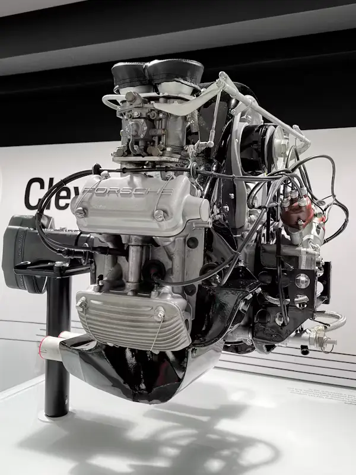
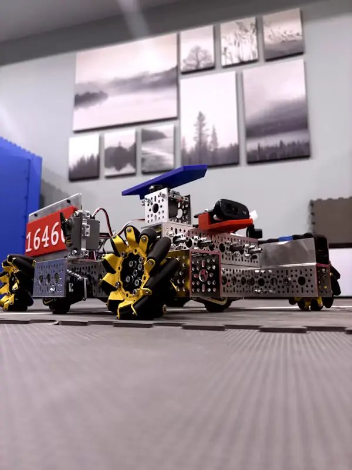
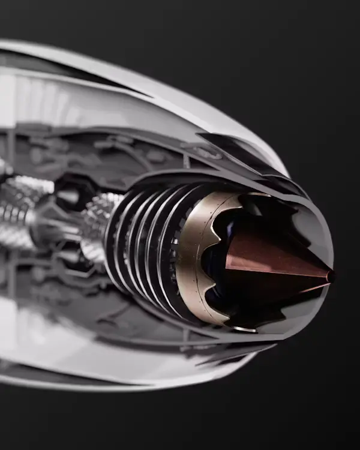
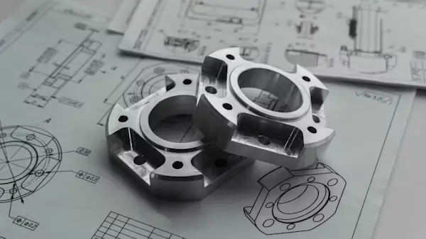

.webp)
Metrology Lab
Certified CMMs, surface gages, and optical comparators provide dimensional confirmation on every critical feature.
Reporting · full feature inspectionQUALITY CONTROL
We maintain process control from raw material receipt through final inspection and certification.
CONTROL SYSTEMS
Our quality system includes incoming inspection, in-process checks, final measurement, and a documented release package.


Add quality control imageCONTROL FOCUS
Certified CMMs, surface gages, and optical comparators provide dimensional confirmation on every critical feature.
Reporting · full feature inspectionData capture and process capability checks are used to identify drift before it becomes a nonconformance.
Standard · CPK monitoringLot tracking, heat number records, and inspection paperwork are stored together with every shipment.
Documentation · material, inspection, shippingWhen an issue appears, we capture the cause, corrective action, and preventive measure before release.
Action · documented and sharedTEST EQUIPMENT


Add CMM imageUsed for full-feature inspections and first article reports on critical work orders.
 Add comparator image
Add comparator image
Precise edge and profile checks for small, delicate, or high-aspect features.
 Add gauge image
Add gauge image
Measure finish, flatness, and radius consistency before shipment.